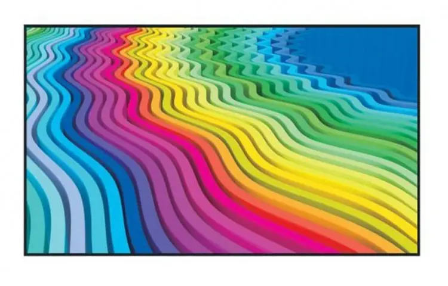

Дисплеи больших диагоналей серии SQ1
Серия SQ1 – серия дисплеев с высоким разрешением, предназначенная для использования в Digital Signage, в ритейле и гостиничном бизнесе. Возможность простого воспроизведения контента произвольного формата с широким выбором цветовых настроек позволит установить данные дисплеи почти при любых условиях освещённости. Стильный внешний вид с тонкими рамками и возможность круглосуточной работы отличают серию от младших моделей.